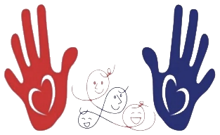

保育のしかたは園によってちがいます。前の園のやり方を捨てていただく必要はありません。
どちらもご相談のうえで決めます。パートから正職員に変わった方もいます。
資格をお持ちでない方の保育補助も募集しています。
※ 募集職種・勤務条件・入職までの流れは、デザイン案としての仮のものです。取材のときにうかがって差し替えます。
今のお仕事を続けながらでも、ご相談だけでもかまいません。ご都合のよい時間に合わせます。